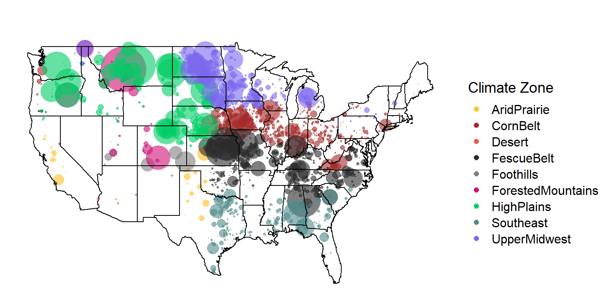

Last updated: 2020-08-31
Checks: 6 1
Knit directory: local_adaptation_sequence/
This reproducible R Markdown analysis was created with workflowr (version 1.6.2). The Checks tab describes the reproducibility checks that were applied when the results were created. The Past versions tab lists the development history.
Great! Since the R Markdown file has been committed to the Git repository, you know the exact version of the code that produced these results.
Great job! The global environment was empty. Objects defined in the global environment can affect the analysis in your R Markdown file in unknown ways. For reproduciblity it’s best to always run the code in an empty environment.
The command set.seed(20200709) was run prior to running the code in the R Markdown file. Setting a seed ensures that any results that rely on randomness, e.g. subsampling or permutations, are reproducible.
Great job! Recording the operating system, R version, and package versions is critical for reproducibility.
Nice! There were no cached chunks for this analysis, so you can be confident that you successfully produced the results during this run.
Using absolute paths to the files within your workflowr project makes it difficult for you and others to run your code on a different machine. Change the absolute path(s) below to the suggested relative path(s) to make your code more reproducible.
| absolute | relative |
|---|---|
| C:/Users/troyrowan/Documents/GitHub/local_adaptation_sequence | . |
Great! You are using Git for version control. Tracking code development and connecting the code version to the results is critical for reproducibility.
The results in this page were generated with repository version 1672558. See the Past versions tab to see a history of the changes made to the R Markdown and HTML files.
Note that you need to be careful to ensure that all relevant files for the analysis have been committed to Git prior to generating the results (you can use wflow_publish or wflow_git_commit). workflowr only checks the R Markdown file, but you know if there are other scripts or data files that it depends on. Below is the status of the Git repository when the results were generated:
Ignored files:
Ignored: .Rhistory
Ignored: .Rproj.user/
Untracked files:
Untracked: data/200730_ASA_AllGenotypes.csv
Untracked: data/200820_sample_sheet.csv
Untracked: data/PRISM_ppt_30yr_normal_4kmM2_annual_asc.asc
Untracked: data/animal_table.rds
Untracked: data/license.txt
Untracked: data/mizzou-data-request/
Untracked: data/prism_climate_data/
Untracked: data/us-zip-code-latitude-and-longitude.csv
Untracked: data/uszips.csv
Untracked: data/uszips.xlsx
Untracked: desktop.ini
Untracked: output/200822_Lab_IDs.csv
Untracked: output/desktop.ini
Untracked: output/k10.allvars.seed2.rds
Untracked: output/k9.allvars.seed1.rds
Untracked: output/k9.allvars.seed2.rds
Untracked: output/k9.threevars.seed1.rds
Untracked: output/k9.threevars.seed2.rds
Untracked: output/kmeans_plotlist.RDS
Untracked: output/zipcode_zones.csv
Unstaged changes:
Modified: code/map_functions.R
Note that any generated files, e.g. HTML, png, CSS, etc., are not included in this status report because it is ok for generated content to have uncommitted changes.
These are the previous versions of the repository in which changes were made to the R Markdown (analysis/animal_locations.Rmd) and HTML (docs/animal_locations.html) files. If you’ve configured a remote Git repository (see ?wflow_git_remote), click on the hyperlinks in the table below to view the files as they were in that past version.
| File | Version | Author | Date | Message |
|---|---|---|---|---|
| Rmd | 1672558 | Troy Rowan | 2020-08-31 | Altered header sizes |
| html | a660a62 | Troy Rowan | 2020-08-31 | Build site. |
| Rmd | 222e47b | Troy Rowan | 2020-08-31 | cleaned up tables and removed K=10 from animal locations file |
| html | 4b17e7e | Troy Rowan | 2020-08-31 | Build site. |
| Rmd | 27eb0df | Troy Rowan | 2020-08-31 | Simmental data dump locations |
sim_animals =
read_csv("data/mizzou-data-request/perf.csv") %>%
left_join(read_csv("data/mizzou-data-request/xref.csv")) %>%
rename(international_id = animal)
sim_pedigree =
read_csv("data/mizzou-data-request/6-gen-ped.csv")
sim_xref =
read_csv("data/mizzou-data-request/xref.csv")
zip_info =
read_csv("data/uszips.csv") %>%
dplyr::select(zip, x = lng, y = lat, city, state_id)%>%
mutate(lat = round(y, 1),
long = round(x, 1)) %>%
select(-x, -y)
k9_all_s1 = readRDS("output/k9.allvars.seed1.rds") #Breaks out Fescue Belt
k9_all_s2 = readRDS("output/k9.allvars.seed2.rds") #Similar fescue belt to 3-var
k9_three_s1 = readRDS("output/k9.threevars.seed1.rds") #These are basically equivalent, just with different seeds
k9_three_s2 = readRDS("output/k9.threevars.seed2.rds")
k10 = readRDS("output/k10.allvars.seed2.rds") #Ten variable This is from the animal table as of August 21st, 2020 Harly turned this into an RDS file using one of her scripts and weird suite of packages (almost broke her computer) This behaved a bit curiously as I kept dropping ~10 K animals from the Simmental data sheet that I read in. Turns out that they had repeated records for mature weight, so the same cow could be listed multiple times. Upon filtering those out and matching as many animals as possible to a Reg or Ref_ID based on their ASA Registration number, I get 100,559 distinct lab IDs. They’re written out and sent to Bob for a data dump on CIFS prior to imputation on Lewis.
There are 99,932 individuals that are adequately accoutned for in the database
animal_table =
readRDS("data/animal_table.rds")
SIM =
rbind(
animal_table %>%
filter(Reg %in% sim_animals$asa_nbr),
animal_table %>%
filter(!is.na(Ref_ID) & Ref_ID %in% sim_animals$asa_nbr),
animal_table %>%
filter(!is.na(Ref_ID2) & Ref_ID2 %in% sim_animals$asa_nbr),
animal_table %>%
filter(!is.na(Ref_ID3) & Ref_ID3 %in% sim_animals$asa_nbr))
#This showed me animals that have multiple entries in the "sim_animal" file
#sim_animals %>% group_by(asa_nbr) %>% count(sort = TRUE)
#filter(sim_animals, !asa_nbr %in% c(SIM$Reg, SIM$Ref_ID, SIM$Ref_ID2, SIM$Ref_ID3))
SIM %>%
select(Lab_ID) %>%
distinct() %>%
write_csv("output/200822_Lab_IDs.csv")98,335 individuals (unique ASA reg numbers) match up to entries in the database
Important to note that many of these are repeats caused by mature weight phenotypes being different for a single animal (up to 7 repeated records).
This does, however show the number of BW, WW, and YW that we have access to
sim_animals %>%
select(BW = bw, WW = ww, YW = yw, MW = mw) %>%
summarise_all(funs(sum(!is.na(.)))) %>%
kable()| BW | WW | YW | MW |
|---|---|---|---|
| 96064 | 89595 | 64608 | 46580 |
sim_animals %>%
filter(asa_nbr %in% c(SIM$Reg, SIM$Ref_ID, SIM$Ref_ID2, SIM$Ref_ID3)) %>%
select(asa_nbr) %>%
unique() %>%
count() %>% .$n %>%
paste(., "individuals in MU database")[1] "98335 individuals in MU database"k9_zips =
left_join(zip_info, k9_all_s1 %>%
mutate(lat = round(y,1),
long = round(x, 1)),
by = c("lat", "long")) %>%
select(-x, -y) %>%
filter(!is.na(layer)) %>%
distinct() %>%
mutate(region =
case_when(
layer == 5 ~ "FescueBelt",
layer == 3 ~ "Southeast",
layer == 6 ~ "ForestedMountains",
layer == 9 ~ "Desert",
layer == 8 ~ "AridPrairie",
layer == 4 ~ "CornBelt",
layer == 7 ~ "UpperMidwest",
layer == 2 ~ "Foothills",
layer == 1 ~ "HighPlains"
)
) %>%
rename(zone = layer)
sim_animals %>%
#mutate(zip = as.numeric(breeder_zip)) %>%
filter(breeder_zip %in% k9_zips$zip) %>%
select(asa_nbr, breeder_zip, international_id) %>%
left_join(k9_zips, by = c("breeder_zip" = "zip")) %>%
group_by(region) %>%
count() %>% kable()| region | n |
|---|---|
| AridPrairie | 1069 |
| CornBelt | 13887 |
| Desert | 16 |
| FescueBelt | 24485 |
| Foothills | 1787 |
| ForestedMountains | 8912 |
| HighPlains | 29195 |
| Southeast | 6733 |
| UpperMidwest | 20270 |
Here, Rainforest becomes a region, but isn’t counted here when we do K=9 with all variables and this seed
k9_zip_s2 =
left_join(zip_info, k9_all_s2 %>%
mutate(lat = round(y,1),
long = round(x, 1)),
by = c("lat", "long")) %>%
select(-x, -y) %>%
filter(!is.na(layer)) %>%
distinct() %>%
mutate(region =
case_when(
layer == 7 ~ "Fescue Belt",
layer == 9 ~ "Southeast",
layer == 2 ~ "Forested Mountains",
layer == 6 ~ "Desert",
layer == 8 ~ "Arid Prairie",
layer == 4 ~ "Rainforest",
layer == 3 ~ "Upper Midwest",
layer == 5 ~ "Foothills",
layer == 1 ~ "High Plains"
)
) %>%
rename(zone = layer)
sim_animals %>%
#mutate(zip = as.numeric(breeder_zip)) %>%
filter(breeder_zip %in% k9_zip_s2$zip) %>%
select(asa_nbr, breeder_zip, international_id) %>%
left_join(k9_zip_s2, by = c("breeder_zip" = "zip")) %>%
group_by(region) %>%
count() %>% kable()| region | n |
|---|---|
| Arid Prairie | 1501 |
| Desert | 16 |
| Fescue Belt | 30276 |
| Foothills | 1391 |
| Forested Mountains | 7606 |
| High Plains | 31632 |
| Southeast | 10518 |
| Upper Midwest | 25723 |
Seed doesn’t appear to cause any issues with major region changes so far as I can see.
k9_zips_threevar =
left_join(zip_info, k9_three_s1 %>%
mutate(lat = round(y,1),
long = round(x, 1)),
by = c("lat", "long")) %>%
select(-x, -y) %>%
filter(!is.na(layer)) %>%
distinct() %>%
mutate(region =
case_when(
layer == 1 ~ "Fescue Belt",
layer == 2 ~ "Southeast",
layer == 9 ~ "Forested Mountains",
layer == 4 ~ "Desert",
layer == 5 ~ "Arid Prairie",
layer == 8 ~ "Rainforest",
layer == 6 ~ "Upper Midwest",
layer == 3 ~ "Foothills",
layer == 7 ~ "High Plains"
)
) %>%
rename(zone = layer)
sim_animals %>%
#mutate(zip = as.numeric(breeder_zip)) %>%
filter(breeder_zip %in% k9_zips_threevar$zip) %>%
select(asa_nbr, breeder_zip, international_id) %>%
left_join(k9_zips_threevar, by = c("breeder_zip" = "zip")) %>%
group_by(region) %>%
count() %>% kable()| region | n |
|---|---|
| Arid Prairie | 2460 |
| Desert | 1435 |
| Fescue Belt | 26561 |
| Foothills | 18684 |
| Forested Mountains | 1436 |
| High Plains | 34624 |
| Rainforest | 15 |
| Southeast | 11828 |
| Upper Midwest | 15700 |
sim_animals %>%
#mutate(zip = as.numeric(breeder_zip)) %>%
filter(breeder_zip %in% k9_zips$zip) %>%
left_join(k9_zips, by = c("breeder_zip" = "zip")) %>%
#rename(zone = layer) %>%
mapplotting(max = 20)
sessionInfo()R version 3.6.1 (2019-07-05)
Platform: x86_64-w64-mingw32/x64 (64-bit)
Running under: Windows 10 x64 (build 19041)
Matrix products: default
locale:
[1] LC_COLLATE=English_United States.1252
[2] LC_CTYPE=English_United States.1252
[3] LC_MONETARY=English_United States.1252
[4] LC_NUMERIC=C
[5] LC_TIME=English_United States.1252
attached base packages:
[1] stats graphics grDevices utils datasets methods base
other attached packages:
[1] forcats_0.5.0 stringr_1.4.0 dplyr_0.8.5 readr_1.3.1
[5] tidyr_1.0.3 tibble_3.0.1 tidyverse_1.3.0 here_0.1
[9] ggcorrplot_0.1.3 corrr_0.4.2 factoextra_1.0.7 ggplot2_3.3.0
[13] purrr_0.3.4 cowplot_1.0.0 ggthemes_4.2.0 maps_3.3.0
[17] RStoolbox_0.2.6 fpc_2.2-7 raster_3.3-7 rgdal_1.5-12
[21] sp_1.4-2 knitr_1.28 workflowr_1.6.2
loaded via a namespace (and not attached):
[1] colorspace_1.4-1 ellipsis_0.3.0 class_7.3-15
[4] modeltools_0.2-23 mclust_5.4.6 rprojroot_1.3-2
[7] fs_1.4.1 rstudioapi_0.11 farver_2.0.3
[10] ggrepel_0.8.2 flexmix_2.3-15 prodlim_2019.11.13
[13] fansi_0.4.1 lubridate_1.7.8 xml2_1.3.2
[16] codetools_0.2-16 splines_3.6.1 doParallel_1.0.15
[19] robustbase_0.93-6 jsonlite_1.6.1 pROC_1.16.2
[22] caret_6.0-86 broom_0.5.6 cluster_2.1.0
[25] kernlab_0.9-29 dbplyr_1.4.3 rgeos_0.5-3
[28] compiler_3.6.1 httr_1.4.1 backports_1.1.6
[31] assertthat_0.2.1 Matrix_1.2-17 cli_2.0.2
[34] later_1.0.0 htmltools_0.4.0 tools_3.6.1
[37] gtable_0.3.0 glue_1.4.0 reshape2_1.4.4
[40] Rcpp_1.0.4.6 cellranger_1.1.0 vctrs_0.2.4
[43] nlme_3.1-140 iterators_1.0.12 timeDate_3043.102
[46] gower_0.2.2 xfun_0.13 rvest_0.3.5
[49] lifecycle_0.2.0 XML_3.99-0.3 DEoptimR_1.0-8
[52] MASS_7.3-51.4 scales_1.1.0 ipred_0.9-9
[55] hms_0.5.3 promises_1.1.0 parallel_3.6.1
[58] yaml_2.2.1 geosphere_1.5-10 rpart_4.1-15
[61] stringi_1.4.6 highr_0.8 foreach_1.5.0
[64] lava_1.6.7 rlang_0.4.6 pkgconfig_2.0.3
[67] prabclus_2.3-2 evaluate_0.14 lattice_0.20-38
[70] recipes_0.1.13 labeling_0.3 tidyselect_1.0.0
[73] plyr_1.8.6 magrittr_1.5 R6_2.4.1
[76] generics_0.0.2 DBI_1.1.0 pillar_1.4.4
[79] haven_2.2.0 whisker_0.4 withr_2.2.0
[82] survival_2.44-1.1 nnet_7.3-12 modelr_0.1.7
[85] crayon_1.3.4 rmarkdown_2.1 grid_3.6.1
[88] readxl_1.3.1 data.table_1.12.8 git2r_0.27.1
[91] ModelMetrics_1.2.2.2 reprex_0.3.0 digest_0.6.25
[94] diptest_0.75-7 httpuv_1.5.2 stats4_3.6.1
[97] munsell_0.5.0